Preparação do ambiente
📖 O recrutamento
📘 Day 0. Preparing for work
O curso “Python for OSINT. 21-day course for beginners” do cipher387, mantido intacto, com uma camada Brasil somada a cada dia, uma investigação contínua (a Operação Vitrine Fantasma), notebooks prontos no Colab e código comentado linha a linha.
Somar, nunca substituir: o exercício original continua lá e o Brasil entra ao lado.
📖 O recrutamento
📘 Day 0. Preparing for work
📖 O primeiro alerta
📘 Day 1. Run the first script
📖 Triagem
📘 Day 2. Minimum Basic Syntax
📖 Ferramenta de campo
📘 Day 3. Install and run Python command line tools
📖 Os depoimentos
📘 Day 4. Reading and writing files
📖 O endereço da loja
📘 Day 5. Handling HTTP requests and working with APIs
📖 O CNPJ do rodapé
📘 Day 6. JSON
📖 A planilha das vítimas
📘 Day 7. CSV
📖 O dump do painel
📘 Day 8. Databases
📖 A vitrine congelada
📘 Day 10. Scraping
📖 A conversa
📘 Day 11. Regular expressions
📖 Disfarce digital
📘 Day 12. Proxies
📖 O mapa das vítimas
📘 Day 13. Functions for working with lists
📖 A sala de evidências
📘 Day 14. Working with the file system
📖 Quem registrou o domínio?
📘 Day 15. Domain information gathering
📖 Os muitos nomes de Kau
📘 Day 16. List mapping and functions for work with strings
📖 O relatório preliminar
📘 Day 17. Generating documents
📖 Onde estão as vítimas
📘 Day 18. Generating charts and maps
📖 O site que sumiu
📘 Day 19. Wayback Machine and time/date functions
📖 O painel do caso
📘 Day 20. Web apps creation
📖 O dossiê
📘 Day 21. Tools to help you work with code
Cada dia vale três cartas. Índice completo em CARTAS.md.
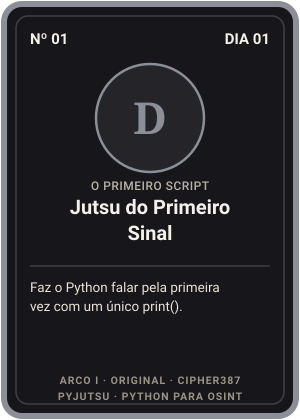
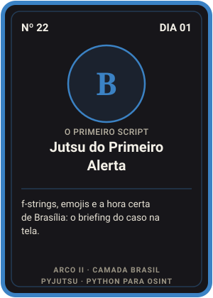
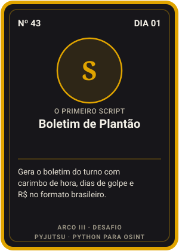
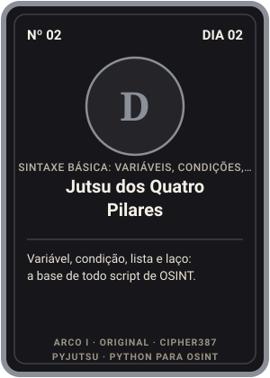
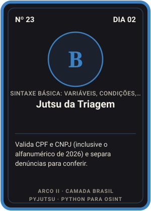
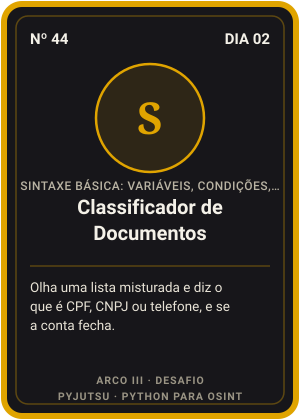
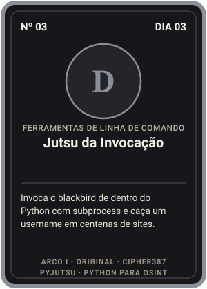
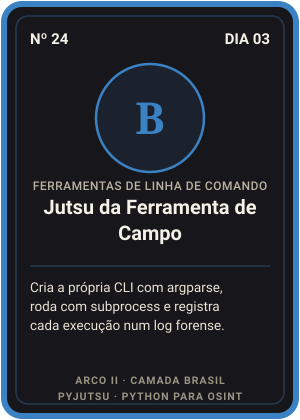
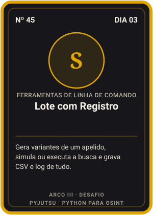
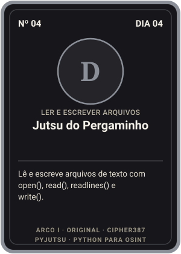
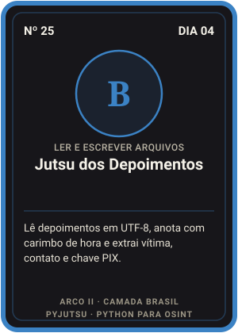
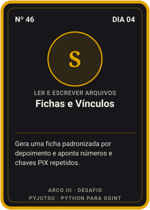
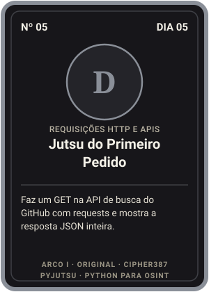
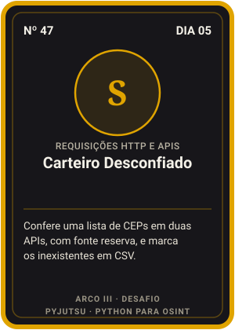
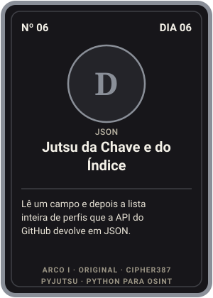
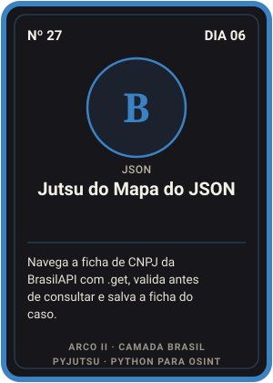
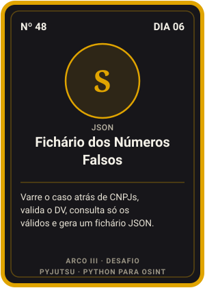
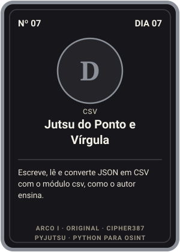
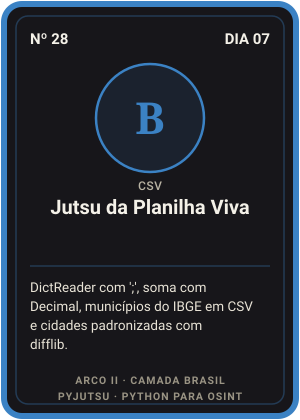
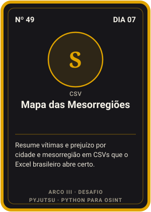
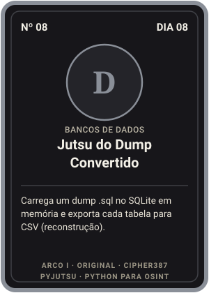
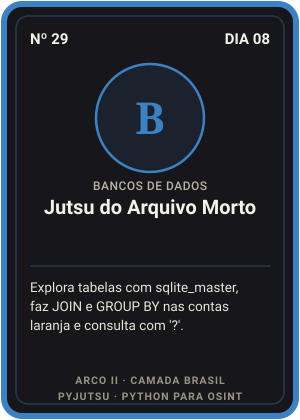
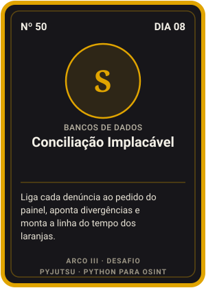
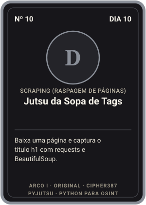
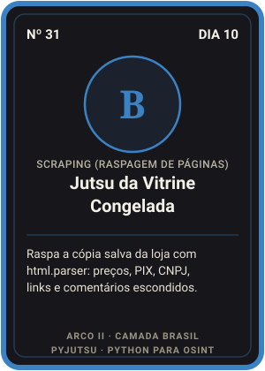
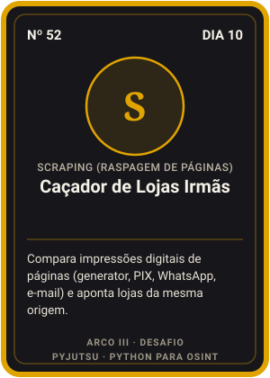
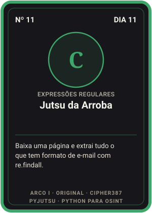
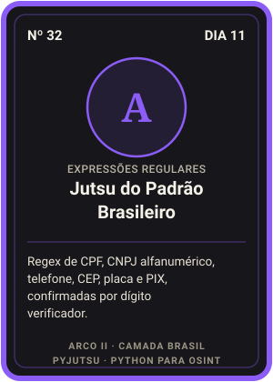
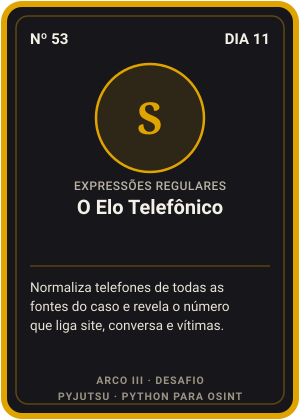
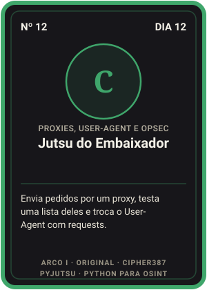
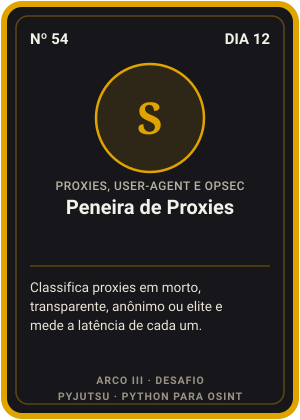
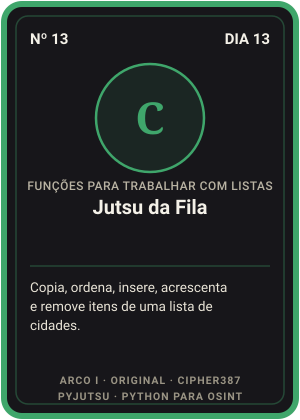
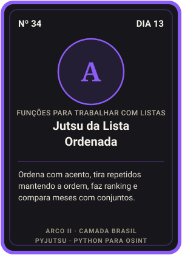
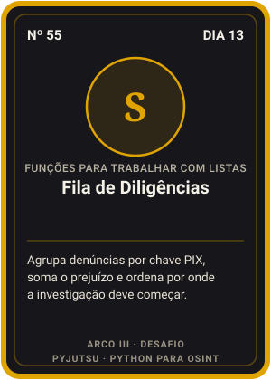
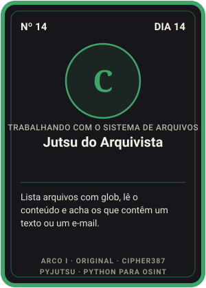
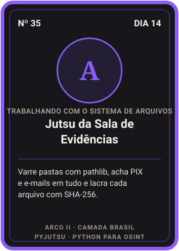
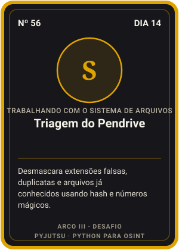
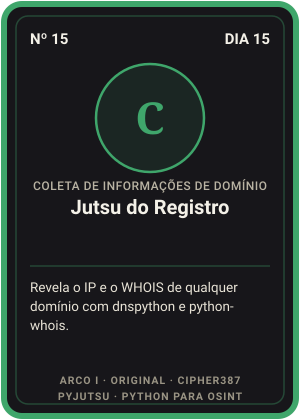
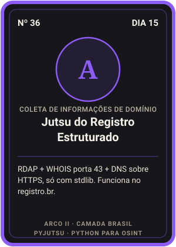
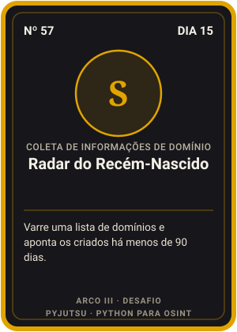
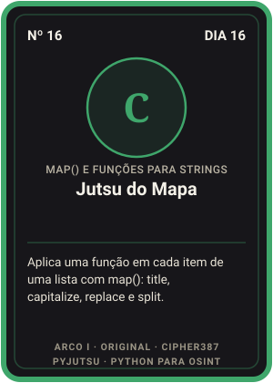
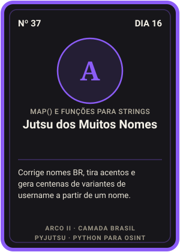
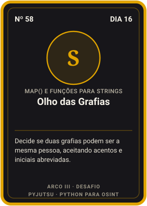
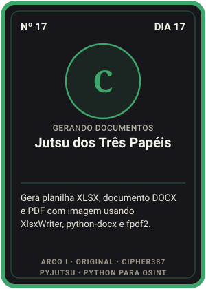
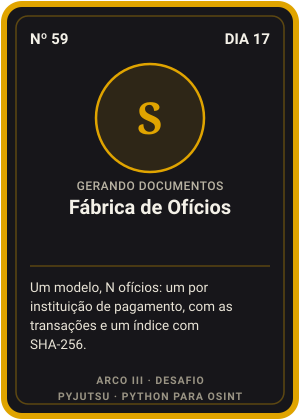
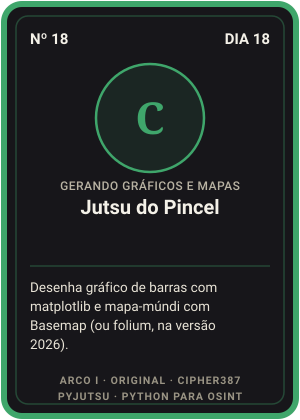
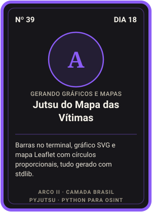
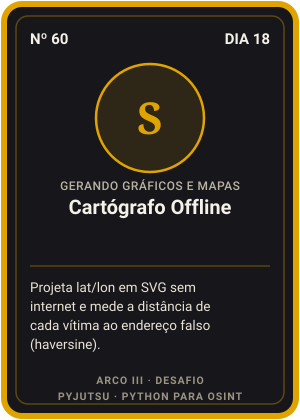
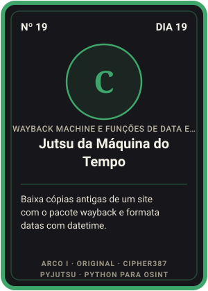
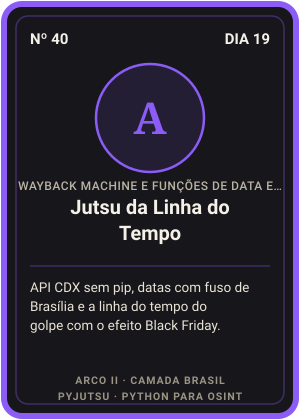
Nada para instalar. Clique em Abrir no Colab em qualquer dia e rode a primeira célula (⚙️ Preparar o ambiente).
Instale o Python 3 em python.org marcando Add python.exe to PATH e o Git. No PowerShell:
git clone https://github.com/Ridd1kulusC0d3r/python-para-osint-21-dias.git cd python-para-osint-21-dias\dia-01-primeiro-script py br\01_ola_nfa.py
No Terminal (o macOS pede para instalar as ferramentas de linha de comando na primeira vez):
git clone https://github.com/Ridd1kulusC0d3r/python-para-osint-21-dias.git cd python-para-osint-21-dias/dia-01-primeiro-script python3 br/01_ola_nfa.py
sudo apt install -y python3 git # Debian/Ubuntu git clone https://github.com/Ridd1kulusC0d3r/python-para-osint-21-dias.git cd python-para-osint-21-dias/dia-01-primeiro-script python3 br/01_ola_nfa.py
No GitHub, abra o repositório e clique em Code → Codespaces → Create codespace on main. É o caminho que o próprio autor do curso recomenda desde que o Gitpod ficou pago.